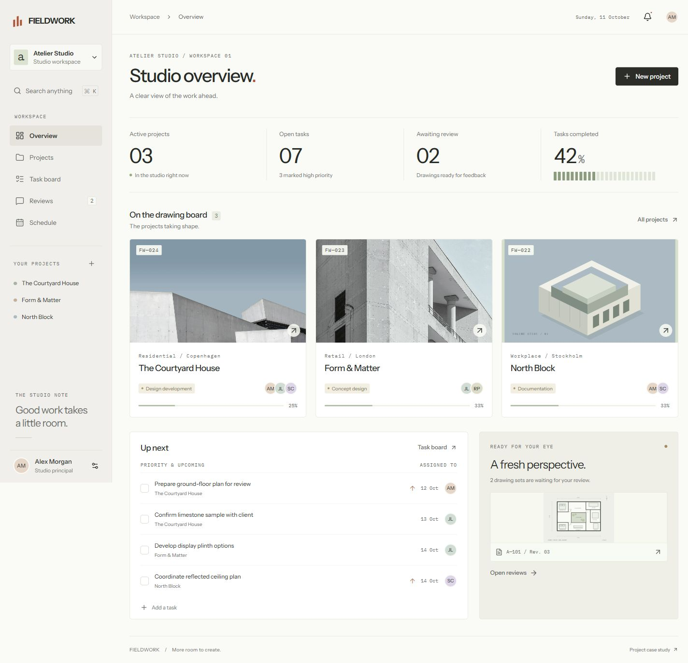
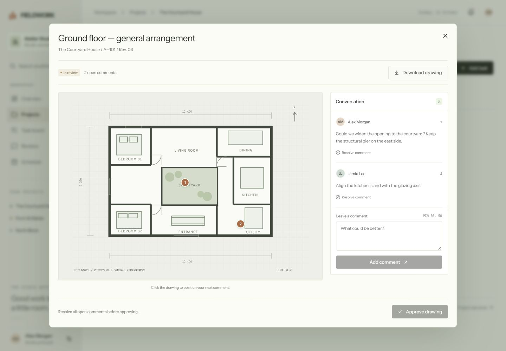
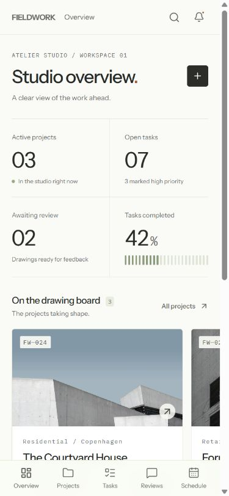
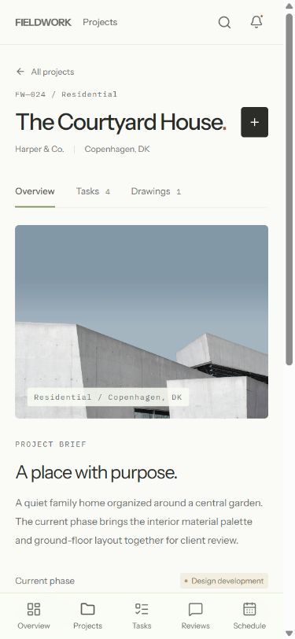
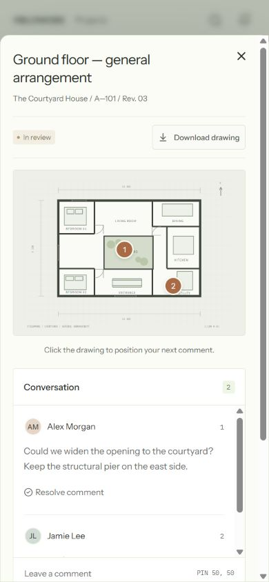

Context before controls.
A project shows its client, phase, milestone and task progress together. Secondary controls stay quiet until they are useful.
A focused workspace that brings projects, team assignments and drawing feedback together.

The starting point was a small design studio with several projects at different stages. A useful workspace needed to answer three questions quickly: what is moving, what needs attention, and what happens next?
I organized the product around those questions. Projects provide context. Tasks turn the brief into next steps. Drawing reviews keep decisions attached to the work itself, rather than buried in a separate conversation.
A project shows its client, phase, milestone and task progress together. Secondary controls stay quiet until they are useful.
Comments sit on a drawing with a numbered pin. An open issue blocks approval; reopening feedback returns the set to review.
A restrained type scale, fine dividers and warm neutrals let the work lead. Color identifies status, projects and drawing feedback.
Place a comment, resolve the conversation, then approve the set. The approval state follows the actual feedback state.

The phone layout preserves the same workflow with a bottom navigation, browsable project cards and a full-width review sheet.

01 / OVERVIEW

02 / PROJECT CONTEXT

03 / PINNED FEEDBACK
The interfaces share the same project and task records. Completing a task updates its project progress; a review decision updates the workspace's pending count.
Create a project, complete a task or leave a comment on a drawing.
A self-initiated product project by Kai Zhang. The workspace contains illustrative studio records, with changes saved in the browser.